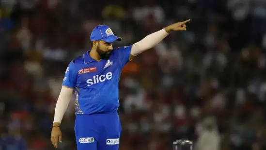

It has been three days since Virat Kohli and Gautam Gambhir clashed after an IPL 2023 match between Lucknow Super Giants and Royal Challengers Bangalore at the Ekana Stadium but interest around it refuses to die. Such was the unexpectedness of the unpleasant sight of two noted names of Indian cricket nearly coming to blows on the cricket field that legends like Sunil Gavaskar and Virender Sehwag felt the ‘100% fine’ imposed by BCCI was not enough. They should have gotten a stricter punishment, they felt.
There are different levels of offences according to the IPL Code of Conduct and for each offence or breach of the conduct, there is a defined fine. The match referee, in consultation with the on-field umpires, deemed Kohli and Gambhir's act a violation of Article 2.21 of the IPL Code of Conduct, which deals with “all types of conduct that bring the game into disrepute.”
The IPL Playing Conditions further add that "the person lodging the report shall determine where on the range of severity the conduct lays." In this case, the match referee and umpires decided that Kohli and Gambhir's breach falls under Level 2 and hence, they were fined 100% of their match fees. LSG pacer Naveen-ul-Haq, who too was found breaching Article 2.21, was fined 50% of his match fee as his offence was deemed to be a Level 1.
Apart from whether the full match fee deduction was enough for the ruckus Kohli and Gambhir created on Monday, there was another debate going on side by side. What is the amount Kohli, Gambhir and Naveen will pay as a fine? Unlike international matches, the IPL match fee is not pre-determined. It depends on various aspects like the player's auction price, his actual salary in case he was retained (like Kohli), and the number of matches the franchise plays in a season.
Kohli, for instance, reportedly draws a yearly salary of ₹15 crore from RCB. If we take into consideration the guaranteed 14 matches RCB - or any other franchise - will play in one season then his match fee will come around ₹1.07 crore. If RCB reach the playoffs then the amount will be less.
The Mumbai Indians posted an absolutely savage response on Twitter after Punjab Kings took a dig at Rohit Sharma.
The Mumbai Indians produced an emphatic performance on Wednesday night to register their fifth win of the 2023 Indian Premier League, beating Punjab Kings by six wickets in Mohali. It was a run-fest at the PCA Stadium, with the home side posting a mammoth score of 214/3 in 20 overs; however, an incredible batting effort from Ishan Kishan (75) and Suryakumar Yadav (66) helped the Mumbai Indians to a much-needed win with seven deliveries to spare.
MI endured a poor start to their run-chase, though; their captain Rohit Sharma continued to struggle with form, as he was dismissed on a duck in the first over of the match. Rishi Dhawan dismissed the MI great early in the innings to put the visitors on instant backfoot, and following the dismissal, the official Twitter account of Punjab Kings posted a rather savage tweet.
In a now-deleted tweet, the PBKS cheekily wrote ‘R0’, taking a dig at Rohit for getting out on a three-ball duck. The MI skipper is fondly nicknamed ‘R0’. The tweet soon gained traction, with fans of Rohit Sharma and the MI criticising the PBKS, and soon, Mumbai Indians' official Twitter account also took notice of the tweet.